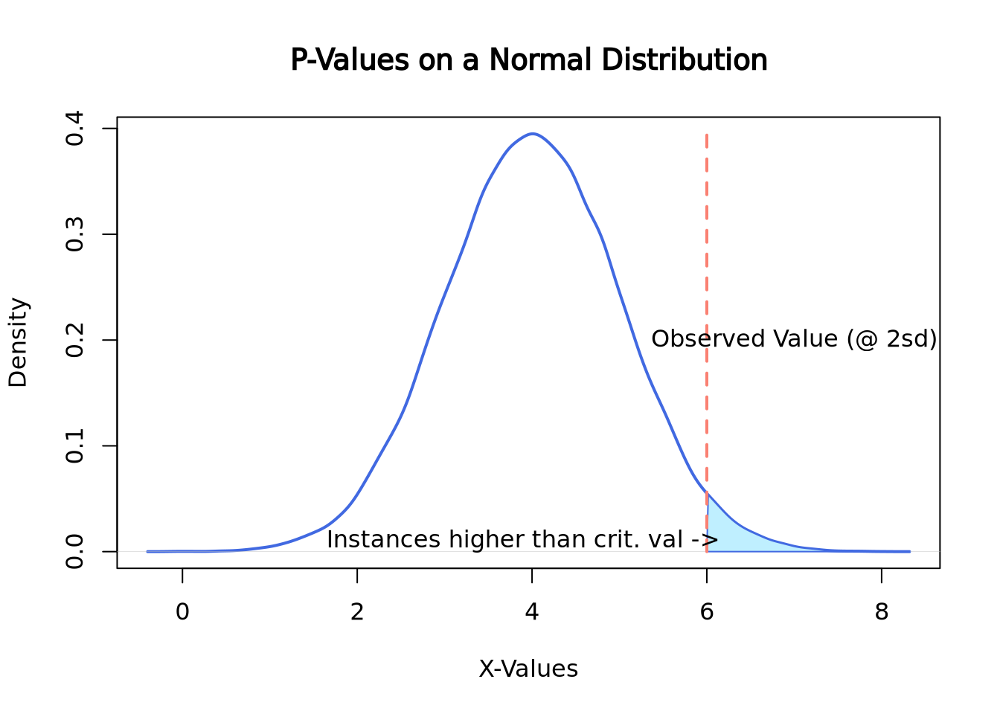

6.3 Statistical Tests
6.3.1 What is a statistical test
A statistical test is an application of mathematics that we used to analyze quantitative data. They can be described as a way to understand how the independent variable(s) of the study affect the outcome of the dependent variable. The kind of statistical test appropriate for a study depends on a number of factors including variables characteristics, study design, and data distribution. The independent variable is (are) the variable(s) being controlled in the study to determine its effects on the dependent variable(s). Not all studies have independent variable(s).
Study design
The number of conditions a study has corresponds to the number of levels the independent variable has, for example 1 condition = 1 level, 2 conditions = 2 levels, and so on. This is different from the number of independent variables a study has. If a study has multiple independent variables, each will have its own number of levels. Statistical tests can be categorized as to whether they can handle 1, 2, or 2+ levels.
If you have 2 or more levels, then the type of grouping will need to be considered: are they between-subjects* or repeated-measures**. A between-subject design means that each participant undergoes one condition whereas a repeated-measures design has each participant undergo all conditions. A third type exists called matched groups, where different subjects undergo different conditions but are matched to each other in some important way, and may be treated as a repeated-measure design when selecting for a statistical test
*Independent design = between-subjects = between-groups; not to be confused with the variable. **Dependent design = repeated-measures = within-subjects = within-groups; also not to be confused with the variable.
Variables
The characteristics of your variables, both independent (predictor) and dependent (descriptor), will help you choose which statistical test to use. Specifically, the number of each, their type, and the level of measurement, will help you narrow your choices to select the appropriate test.
Number of Variables
The number of both independent and dependent variables will affect which test you select. Test selection will differ whether you have 1 or 2+ dependent variables and 0, 1, or 2+ independent variables.
Types of Data (Continuous and Categorical)
Typically in bioinformatics, data is subdivided into 3 categories: Continuous, Categorical, and Binary. Continuous data is data that can take real number values within either a finite or infinite range. For example, height is a continuous variable: 152.853288cm (60.1783 in), 182.9704cm (72.0356 in), 172.7cm(68in), 163cm(64.2in) and 145.647cm (57.3413 in) are all technically valid heights. Categorical data is data that can be divided to categories or groups such as (high, medium, and low) or (under10, 10-29, and 30+). Binary data, data that can either be one thing or another (T/D, Y/N, 0/1, etc) falls under the Categorical data umbrella though may get mentioned separately elsewhere. Data that exists in sequential, positive integer form- such as number of siblings- is called Discrete data (bonus 4th category!) but typically ends up being treated as categorical data.
Levels of Measurement
The main levels of measurement in we use in statistics are Ratio, Interval, Nominal, and Ordinal. Both Ratio and Interval levels have distance between measurements defined; the biggest difference between the two is that Ratio measurements have a meaningful zero value (and no negative numbers). Height in inches or cm, Kelvin, and number of students in a class are all Ratio measurements. Interval measurements do not have a meaningful zero. Celsius and Fahrenheit both have arbitrary 0s- the freezing point of pure and (a specific kind of) ocean water- making most standard temperature measurements type Interval. Ordinal measurements have a meaningful order to their values but have variable/imprecise distances between measurements, like socioeconomic status (upper, middle, and lower) and days since diagnosis (under 10, 10-39, 40-99, 100+). Nominal measurements do not have meaningful order to their values, like country of origin and yes/no. Ratio and Interval measurements are continuous variables while Nominal and Ordinal measurements are categorical variables.
Data Distribution (Parametric vs Nonparametric)
This is the third factor to keep in mind for test selection and only applicable for NON-nominal dependent variables. Parametric tests make the assumption that the population the data is sourced from has a normal or Gaussian distribution. These are powerful tests because of their data distribution assumption, with the downside of only being able to be used in select cases. Nonparametric tests do not assume a normal distribution and therefore can be used in a wide range of cases, thought they are less likely to find significance in the results.
6.3.2 Common Statistical Tests
Here are some common statistical tests and a quick overview as to how to run them in R. If you would like more information about a specific test, links are included in the descriptions
These are only some statistical tests. Here’s a link to where you can find a few more
One-Sample T-Test
Dependent Variables: 1, continuous [ratio and interval]
Independent Variables: 0 variables
Design: 1 group, 1 level
Parametric: Yes
More t-test information shamelessly linked from SPH Null and Alternate (Research) Hypotheses Z-values(not mentioned but are in texts that fully explain t-tests) One-Sample t-tests come in 3 flavors: two-tailed test, one-tailed test (upper tail), and one-tailed test (lower tail).
# One-sample t-test
t.test(x, #numeric vector of data
mu = 0, #True value of the mean. Defaults to 0
alternative = "two.sided", # ("two.sided", "less", "greater") depending on which you want to use. Defaults to "two.sided
conf.level = 0.95 #1-alpha. Defaults to 0.95
)The t.test() function allows for multiple kinds of t-tests. To use this
function to perform a one sample t-test, you will need a numeric vector of the
data you want to run the data on, the mean you want to compare it to, your
confidence level (1 - alpha), and your alternative hypothesis. The t-test, like
other kinds of t-tests, will compare the means by calculating the t-statistic,
p-value and confidence intervals of your data’s mean.
t: The calculated t-statistic, uses formula : (mean(x) - mu)/(sd(x)*sqrt(n_samples))
df: Degrees of Freedom. Calculated by: n_samples-1
p: The p-value of the t-test as determined by the t-statistic and df on the t-distribution table
(conf.level) percent confidence interval: calculated interval where the true mean(x) is with conf.level % certainty.
sample estimates, mean of x: The calculated mean of x
Accepting or rejecting the null hypothesis is a matter of determining if mean(x) is outside the percent confidence interval range, if it is then the p-value will determine the significance of the results.
#Example
set.seed(10)
x0 <- rnorm(100, 0, 1) #rnorm(n_samples, true_mean, standard_deviation)
ttestx0 <- t.test(x0, mu = 0, alternative = "two.sided", conf.level = 0.95) #actual running of the t-test
#t.test(x0) yeilds the same results bc I used default values for mu, alternative, and conf.level
tlessx0 <- t.test(x0, mu = 0, alternative = "less", conf.level = 0.90)
knitr::knit_print(ttestx0) #display t-test output via knitr##
## One Sample t-test
##
## data: x0
## t = -1.4507, df = 99, p-value = 0.15
## alternative hypothesis: true mean is not equal to 0
## 95 percent confidence interval:
## -0.32331056 0.05021268
## sample estimates:
## mean of x
## -0.1365489In t.test_x0, we are running a two-tailed t-test on a vector of 100 doubles
generated with rnorm() where the intended mean is 0. Since this is a
two-tailed test, the alternate hypothesis is mean(x0) != 0 while the null
hypothesis is mean(x0) = 0
Since mu=0 and 0 is within the range (-.323, 0.050), we have failed to reject the null hypothesis with this set of data
Unpaired T-Test
Dependent Variables: 1, continuous [ratio and interval]
Independent Variables: 1
Design: 2 groups, 2 levels
Parametric: Yes
# One-sample t-test
t.test(x, #numeric vector of data 1
y, #numeric vector of data 2
alternative = "two.sided", # ("two.sided", "less", "greater") depending on which you want to use. Defaults to "two.sided
conf.level = 0.95 #1-alpha. Defaults to 0.95
)The unpaired t-test functions similarly to the one-sample t-test except instead of mu, it uses dataset y. Variance is assumed to be about equal between dataset x and y.
#Unpaired t-test example
set.seed(10)
x <- rnorm(100, 0, 1)
y <- rnorm(100, 3, 1)
unpaired <- t.test(x, y)
knitr::knit_print(unpaired)##
## Welch Two Sample t-test
##
## data: x and y
## t = -22.51, df = 197.83, p-value < 2.2e-16
## alternative hypothesis: true difference in means is not equal to 0
## 95 percent confidence interval:
## -3.308051 -2.775122
## sample estimates:
## mean of x mean of y
## -0.1365489 2.9050374Output for an unpaired two sample t-test is similar to the output for the one-sample. Mu is typically 0 (though one could change it with ‘mu = n’ in the function call) and the test uses the confidence interval for (mean(x)-mean(y)), which is (-3.308, -2.775). Since mu does not exist within the confidence interval, the null hypothesis can be rejected.
Paired T-Test
Dependent Variables: 1, continuous [ratio and interval]
Independent Variables: 1
Design: 1 group, 2 levels
Parametric: Yes
# One-sample t-test
t.test(x, #numeric vector of data 1
y, #numeric vector of data 2
paired = TRUE, #defaults to FALSE
alternative = "two.sided", # ("two.sided", "less", "greater") depending on which you want to use. Defaults to "two.sided
conf.level = 0.95 #1-alpha. Defaults to 0.95
)The paired t-test works for matched and repeated-measures designs. Like the
unpaired t-test, it has a second data vector and does not need ‘mu.’ When
running a paired t-test make sure that you specify that paired = TRUE when
calling the function and that x and y have the same length.
More information about paired t-tests here
#Unpaired t-test example
set.seed(10)
x <- rnorm(100, 0, 13)
y <- rnorm(100, 3, 1)
unpaired <- t.test(x, y, paired = TRUE)
knitr::knit_print(unpaired)##
## Paired t-test
##
## data: x and y
## t = -3.7956, df = 99, p-value = 0.0002539
## alternative hypothesis: true difference in means is not equal to 0
## 95 percent confidence interval:
## -7.126787 -2.233560
## sample estimates:
## mean of the differences
## -4.680174Similar to the unpaired t-test, the paired t-test looks at the differences
between x and y. Unlike the unpaired t-test, the statistic creates and runs its
test on a third set of data created from the differences of x and y. For an x
and y of length n, r would create a third data set of new = ((x1-y1), (x2-y2),...(xn-1-yn-1), (xn-yn)) and run its testing with mean(new) and sd(new)
Chi-Squared test
Dependent Variables: 1, categorical
Independent Variables: 1
Design: 2 groups, 2 + levels
Parametric: No
More Information on Chi-Squared tests
#How to Run a chi-squared test
chisq.test(x, # numeric vector, matrix, or factor
y # numeric vector; ignored if x is a matrix; factor of the same length as x if x is a factor
)6.3.2.1 __Chi-Square Goodness-Of-Fit_ _{-}
Dependent Variables: 1, categorical
Independent Variables: 0
Design: 1 group
Parametric: No
More Information on Chi-Squared test on one sample
#How to Run a chi-square goodness of fit
chisq.test(x, # numeric vector
p = #list of probabilities, like c(10, 10, 10, 70)/100), same length as x
)The chi-squared goodness-of-fit can compare one set of outcomes to a given set of probabilities to determine the likelihood of the test probabilities differing from the given. The set of given probabilities constitutes the null hypothesis. In the below example, the dataset is the tested outcome frequencies: the number of times x[1], x[2], x[3], and x[4] were observed. If my null hypothesis says that each of the 4 should be observed an equal number of times, then the resulting chi-square test should will have a p-value of p<0.001
x <- c(10,25, 18, 92)
chisq.test(x, p=c(25, 25, 25, 25)/100)##
## Chi-squared test for given probabilities
##
## data: x
## X-squared = 117.43, df = 3, p-value < 2.2e-16Wilcoxon-Mann Whitney test
Dependent Variables: 1, (ordinal, interval, or ratio)
Independent Variables: 1
Design: 2 groups, 2 levels
Parametric: No
wilcox.test(x,#Numeric vector of data
y #optional numeric vector of data)Wilcoxon Signed Ranks test
Dependent Variables: 1, (ordinal, interval, or ratio)
Independent Variables: 1
Design: 1 groups, 2 levels
Parametric: No
wilcox.test(x,#Numeric vector of data
y, #numeric vector of data from 2nd level- same length
paired = TRUE)
6.3.3 Choosing a Test
- Look for your Dependent Variable(s). How many do you have? (1 or 2+)
- Which ones exist on a continuum, where any fraction within the valid range is technically possible, though the actual data might have rounded? (Continuous vs Categorical)
- For Categorical: If values do not have a definite order then it’s Nominal. Else it’s probably Ordinal
- Look for your Independent Variable(s). How many do you have? (0, 1, or 2+)
- Define their types and level of measurement as described in 1a and then do 2b and 2c if you have 1 or more independent variables
- How many conditions does each independent variable have? (= # of levels)
- Does the same subject or (equivalent subjects) undergo each condition/level? (‘Yes’ -> repeated-measures; ‘No’ -> between-groups
- If you do not have nominal data, can you assume your data would have a normal distribution if you measured the general population? (‘Yes’-> parametric; ‘No’ -> non-parametric)
6.3.4 P-values
In statistics, the p-value is the probability of obtaining the observed results assuming that the null hypothesis is correct. In other words, the p-value is the probability of the same results happening by chance selection from the normal population rather than the test condition.
For instance, imagine there is a game that randomly picks one out of four colors. The game developer decides to add a 5th color, yellow, so that each color now has 1/5 chance of winning and a 4/5 chance of losing. How many of its first games would yellow have to lose in a row before you suspect the dev forgot to code in the ability for yellow to win? If you want to wait to until there is a < 5% chance of yellow losing every single game in a row under normal circumstances before pointing this out to the dev, then yellow would have to lose 14/14 games (a 4.4% likelihood).
To visualize how 14 losses in a row in a game of chance with 1/5 success rate would occur in less than 5% of all instances, we can run a simulation of 1000 instances of 14 games with 1/5 chance success and displaying the results with their frequencies of success:
roll <- function(nrolls, noptions){
outcomes <- sample(1:noptions, nrolls, TRUE)
return(length(outcomes[outcomes == 1]))
}
dataset <- function(sample, nrolls, noptions){
simulations <- c()
for(i in 1:sample){simulations[i] <- roll(nrolls, noptions)}
return(simulations)
}
set.seed(18)
Yellow_Wins <- dataset(1000, 14, 5)
hist(Yellow_Wins, freq=FALSE, right=FALSE) Here you see that slightly less than 5% of all run instances had 0 wins.
Here you see that slightly less than 5% of all run instances had 0 wins.
In this situation, we are comparing if yellow’s win rate is significantly lower than if yellow had an equal chance at winning. The research hypothesis or alternative hypothesis in this case is that yellow’s chance of winning is significantly lower than the rest of the colors while the null hypothesis would be that yellow’s chance of winning is the same as the rest of the colors. The p-value of this test would be 0.043 because 43 out of 1000 instances of 14 rolls with a 1/5 chance of success totaled 0 successes, the number of successes we saw. If we instead were looking for 1 success or less out of 14 rolls, the p-value would be 0.19, because our simulation ran 147 instances of 1 success and 42 instances of 0 success.
Since p-values are calculated by the percentage of outcomes that are higher than the one observed, on a normal distribution they may look something like this:
set.seed(2)
norm <- rnorm(n = 50000, mean = 4, sd = 1)
plot(density(norm),
main = "P-Values on a Normal Distribution", xlab = "X-Values",
lwd = 2, col = "royalblue"
)
polygon(
x = c(density(norm)$x[density(norm)$x >= 6], 6),
y = c(density(norm)$y[density(norm)$x >= 6], 0),
border = "royalblue", col = "lightblue1"
)
segments(x0 = 6, y0 = 0, y1 = 0.4, lwd = 2, lty = 2, col = "salmon")
text(7, 0.2, "Observed Value (@ 2sd)")
text(3.9, 0.01, "Instances higher than crit. val ->")
Here the observed value is 6, which happens to be exactly 2 standard deviations above the mean. To compute the p-value of this instance, the area under the curve would need to be calculated which can be easily done by looking up the appropriate values on a z-table. Here is a link about finding the area under the normal curve
6.3.5 Multiple Hypothesis Testing .
What is multiply hypothesis testing adjustment? Why is it important? What are some common adjustment methods (Bonferroni (FWER) and Benjamini-Hochberg (FDR))? How do we interpret adjusted p-values (depends on the adjustment method)? How do we compute adjusted p-values in R?
6.3.6 Statistical power
Statistical Power is the probability that the null hypothesis was actually false but the data did not have enough evidence to reject it. In short, it is the failure to reject the null hypothesis in the presence of a significant effect. This is a Type II error, also known as a false negative. Its counterpart, the Type I error, is the probability that a null hypothesis was rejected when there was no significant effect.
The chance of a Type I error is represented by alpha, the same alpha that we use to calculate significance level (1-alpha). Type II errors are represented by beta. The relationship between statistical power and beta are similar to the relationship between significance level and alpha: statistical power is calculated as 1-beta.
Read more about the relationship between Type II and Type I errors
To calculate beta, find the area under the curve of the research hypothesis distribution on the opposite side of the critical value line where alpha is calculated. To find the area in the tail of the distribution, you would need to reference a Z-score chart, which will not be expected of you in this course. If you wish to read more about it here is a link about finding the area under the normal curve with z-scores, same one as linked above
 Code sourced from:
caracal, “How do I find the probability of a type II error,” stats.stackexchange.com, Feb 19, 2011, link, Date Accessed: Feb 28, 2022
Code sourced from:
caracal, “How do I find the probability of a type II error,” stats.stackexchange.com, Feb 19, 2011, link, Date Accessed: Feb 28, 2022
The above graph shows the relationship of alpha and beta. Since the alternative hypothesis is looking for a higher mean, alpha is calculated by the area under the null hypothesis curve on right side of the critical value while beta is calculated by the area under the alternative hypothesis on the left of the critical value line. Should an experiment get a higher p-value than the critical value, then the Beta will increase in relationship to Alpha decreasing.
 In this graph, the critical value was moved to 0.025 while the null and alternative hypotheses stayed the same. As the chance of alpha decreased, the chances of beta increased. The opposite is also true, as alpha increases, beta decreases
Applications of Statistical Power
One of the applications of statistical power, besides as a measure of Type II error probability, is to allow you to run a power analysis. A power analysis involves using the relationship between Effect Size, Sample Size, Significance, and Statistical Power when you have three of the four parts in order to find the value of the fourth. This is typically used to find the effect size of a study, as that is often the hardest to estimate, or to find a sample size that corresponds with a desired effect size when designing a study. Further reading on statistical power and power analysis
Effect Size
The effect size is a measurement of the magnitude of experimental effects. There are a number of ways to calculate effect size including but not limited to Cohen’s D, Pearson’s R, and Odds Ratio. If you would like to read about what BU’s SPH has to say about it, here is the SPH module link
Citations: Dorey FJ. Statistics in brief: Statistical power: what is it and when should it be used?. Clin Orthop Relat Res. 2011;469(2):619-620. doi:10.1007/s11999-010-1435-0
Parab S, Bhalerao S. Choosing statistical test. Int J Ayurveda Res. 2010;1(3):187-191. doi:10.4103/0974-7788.72494 Introduction to SAS. UCLA: Statistical Consulting Group. from https://stats.idre.ucla.edu/sas/modules/sas-learning-moduleintroduction-to-the-features-of-sas/ (accessed February 24, 2022)
Ranganathan P, Gogtay NJ. An Introduction to Statistics - Data Types, Distributions and Summarizing Data. Indian J Crit Care Med. 2019 Jun;23(Suppl 2):S169-S170. doi: 10.5005/jp-journals-10071-23198. PMID: 31485129; PMCID: PMC6707495.